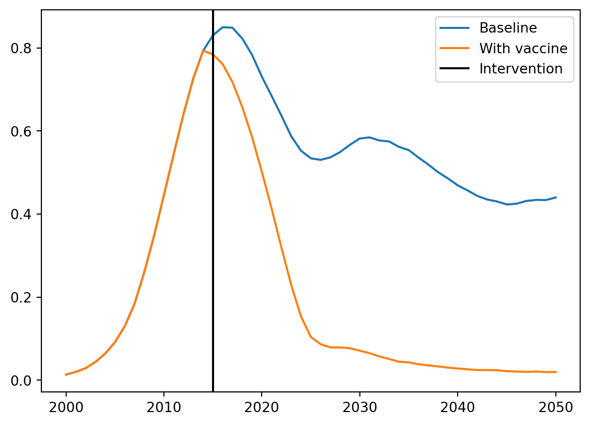
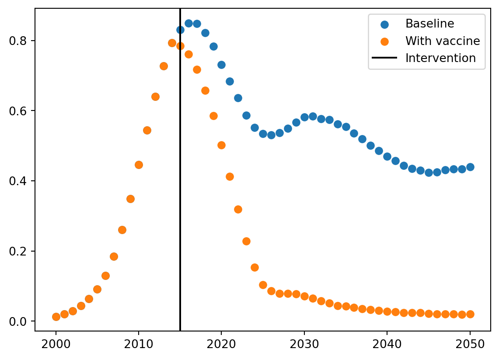

Starsim’s implementation of time is complex, because, well, time is complex. Some questions we’ve had to wrestle with:
If you run a simulation from 2000 to 2020 with monthly timesteps, would you expect the same average result (say, number of infections) in 2004 (leap year) and 2005 (not a leap year)? What about February 2012 vs. March 2012?
Is a year 365 days, 365.25 days, or either 365 or 366 days depending on the year?
Usually years and dates are interchangeable, e.g. float(2000) == ss.date('2000-01-01'). So start=2000, stop=2020 is equivalent to start='2000-01-01', stop='2020-01-01'. But what if someone wants to simply run for a number of years, e.g. start=0, stop=20, given that there is no year 0?
If the user has scheduled an event to happen at fractional year 2025.7, do they mean the nearest day (2025-09-12) or do they mean that exact timestamp (2025-09-11 16:48:00)? Will users ever want to worry about hours and minutes? What about microseconds and nanoseconds?
Should units be strict, e.g. ss.days(5) != 5, or permissive, e.g. ss.days(5) == 5?
If a mortality rate is specified as “100 deaths per 1000 people per year”, at the end of a year, should 100 people die (“100 deaths per 1000 people counted from the beginning to the end of a year”), or should 95 die (“100 deaths per 1000 person-years”, since people stop accruing person-years after they die)?
What does it mean to multiply a probability? Is ss.prob(0.1)*2 == ss.prob(0.2)? If so, what is ss.prob(0.5)*2 or ss.prob(0.9)*2?
Why are we telling you all this? Because although time seems intuitive, there are many corner cases where intuition breaks down (and, worse, it might not seem like it has broken down, leading you astray!). Thus, perhaps more than any other part of Starsim, be sure to check your assumptions about time. For example, in answer to the questions above (which are some but not all of the thorny issues we encountered!), we’ve made the following decisions – but we recognize that different decisions would also be valid:
A month is defined as exactly 1/12th of a year, so there are the same number of infections in 2004 and 2005, and in February vs. March.
A year is equal to 365 days (although some stretching happens to make integer years and calendar dates line up where needed).
Because there is no way to represent year 0 with a date object (e.g. ss.date(), which is based on pd.Timestamp), for this (important) special case we need to switch to a different object, ss.datedur() (more on that below).
We assume the user means integer days, unless they have explicitly requested otherwise (e.g. dt=ss.days(0.1)).
Units are loose when comparing to unitless quantities (ss.days(5) == 5), but are strict when comparing with other units (e.g. ss.years(1) == ss.days(365)).
In Starsim v2, we chose the former by default. In Starsim v3, we decided we were wrong to do that and now choose the latter.
Probabilities are always constrained to [0, 1], so ss.prob(0.5)*2 == ss.prob(0.75), but this also means that ss.prob(0.1)*2 ≈ ss.prob(0.19).
More information about the philosophy of time is available here.
Dates
Starsim defines a custom date object, ss.date, which is based on pd.Timestamp. It is quite flexible in terms of input:
import pandas as pdimport datetime as dtimport starsim as ssimport matplotlib.pyplot as pltss.options(jupyter=True)d1 = ss.date(2020)d2 = ss.date(2020, 1, 1)d3 = ss.date('2020-01-01')d4 = ss.date(pd.Timestamp('2020-01-01'))d5 = ss.date(dt.datetime(2020, 1, 1))assert d1 == d2 == d3 == d4 == d5print(d1)
2020.01.01
Dates are interchangeable with floating point years (although be careful, as despite our best efforts, some rounding errors can still occur):
d = ss.date('2025.08.02')print(d)print(d.years)print(float(d)) # Alias to d.years
2025.08.02
2025.5835616438355
2025.5835616438355
Like many Starsim objects, you can get all the properties of an ss.date object with .disp():
You can do some kinds of arithmetic on date, mostly addition or subtraction:
d = ss.date('2015.8.10')print(d)print(d + ss.years(10))print(d + ss.datedur(months=3, days=-5))
2015.08.10
2025.08.10
2015.11.05
There is also an ss.DateArray() object, which you are unlikely to need to work with directly, but which is used to handle timelines (more on those later):
import numpy as npdatearr = ss.date.from_array(np.arange(1990, 2020))print('From an array:\n', datearr)weekarr = ss.date.arange(start='2025-07-01', stop='2025-09-18', step=ss.week)print('Using arange:\n', weekarr)
Since different modules are allowed to have their own start, stop, and timestep, we need to coordinate their events with each other and with the sim. The class that does this is called ss.Timeline. You will rarely (if ever) need to invoke it directly, but it’s important to understand how it works.
It’s so important, it’s stored as .t in the sim and each module, e.g. sim.t. Let’s start with a simple example:
sim = ss.Sim(verbose=False).run() # Can use an empty simprint(sim.t)
Timeline(2000-2050; dt=year; now=2050; ti=50/50)
The ss.Timeline object has several different ways of representing (the same) time; each is useful for a different purpose. We can see each of these with the .to_dict() method:
t = ss.Timeline(start=2020, stop=2022, dt=ss.month)print(t.to_dict())
We have four different vectors that represent the time:
datevec: calendar dates;
yearvec: floating-point years;
relvec: relative times since the start of the sim;
tivec: timesteps.
The other two, tvec and timevec, match one of these four, but which one they match depends on what the user’s inputs are. For example, if we use a duration-based timeline, we get different results:
t = ss.Timeline(start=ss.days(0), stop=ss.days(10), dt=ss.day)print(t.to_dict())
tvec is what the ss.Timeline object uses internally as “canonical” simulation time. timevec is the “most-human-friendly” representation of the time, and is what is e.g. stored in results to help with plotting.
Plotting with dates
Plotting with dates is hard. Consider this example (from the interventions tutorial):
# Define the parametersstart =2015vax = ss.routine_vx(start_year=start, prob=0.8, product=ss.simple_vx(efficacy=0.9))pars =dict(diseases='sis', networks='random', n_agents=5000)# Create and run the simss1 = ss.Sim(pars)s2 = ss.Sim(pars, interventions=vax)ss.parallel(s1, s2) # Run the simsr1 = s1.resultsr2 = s2.results# Use Matplotlib to plot the resultsplt.figure()plt.plot(r1.timevec, r1.sis.prevalence, label='Baseline')plt.plot(r2.timevec, r2.sis.prevalence, label='With vaccine')plt.axvline(start, color='k', label='Intervention')plt.legend()
What the heck! The vertical line is in totally the wrong place. That’s because the x-axis is plotting using ss.date, which underneath is pd.Timestamp, and underneath that is np.datetime64[ns], which interprets “2015” as '1970-01-01T00:00:00.000002015' (i.e., 2,015 nanoseconds after the “start of the epoch”, which is defined as January 1st, 1970).
We have two ways of fixing this. The first is to simply remember to convert to a date:
plt.figure()plt.plot(r1.timevec, r1.sis.prevalence, label='Baseline')plt.plot(r2.timevec, r2.sis.prevalence, label='With vaccine')plt.axvline(ss.date(start), color='k', label='Intervention') # Fix by converting to a dateplt.legend()

(Are you wondering why the lines diverge before the intervention starts? It’s because the vaccine takes effect immediately, so by the start year there’s already a difference in the number of infections, and Matplotlib is interpolating the lines.)
The second is by using the .years property of timevec, so we don’t have to worry about dates at all:
plt.figure()years = r1.timevec.years # Fix by using floating-point yearsplt.scatter(years, r1.sis.prevalence, label='Baseline')plt.scatter(years, r2.sis.prevalence, label='With vaccine')plt.axvline(start, color='k', label='Intervention')plt.legend()

Timepars
Dates say when things happen, but disease modeling is really mostly about durations and rates: how may days from infection to recovery? What is the probability of transmission per week? In Starsim, we call these unit-aware quantities time parameters (or timepars for short), represented by the class ss.TimePar. Timepars are all available in four base units: days, weeks, months, or years (noting that a week is defined as exactly 7 days, and a month is defined as exactly 1/12th of a year). The full class hierarchy of the time parameters is:
TimePar # All time parameters
├── dur # All durations, units of *time*
│ ├── days # Duration with units of days
│ ├── weeks
│ ├── months
│ ├── years
│ └── datedur # Calendar durations
└── Rate # All rates, units of *per* (e.g. per time or per event)
├── per # Probability rates over time (e.g., death rate per year)
│ ├── perday
│ ├── perweek
│ ├── permonth
│ └── peryear
├── prob # Unitless probability (e.g., probability of death per infection)
│ ├── probperday
│ ├── probperweek
│ ├── probpermonth
│ └── probperyear
└── freq # Number of events (e.g., number of acts per year)
├── freqperday
├── freqperweek
├── freqpermonth
└── freqperyear
Durations
Durations are relatively straightforward. The base class for durations is ss.dur(), but in almost all cases you’ll want to use ss.days(), ss.weeks(), ss.months(), or ss.years() instead. (In fact, if you type ss.dur(3, 'years'), it will return ss.years(3).)
Durations operate more or less how you would expect, with the left hand operator taking precedence:
In most cases, the durations above can be used for arithmetic with dates. But sometimes we need precise date arithmetic that keeps track of each unit separately. For this we can use ss.datedur. For example:
Why is this happening? Because 2025.5 is closer to July 2nd than July 1st. There are fewer days from the start of the year to July 1st than there are days from July 1st to the end of the year:
So even though a month is “usually” 1/12th of a year exactly, and although 6/12ths is certainly 0.5, this is an example where we get a different answer depending on whether we do date-based arithmetic or float-based arithmetic.
Rates
Rates are more complicated than durations since there are three different meanings of the term “rate”, each reflected by a different class.
Frequencies
We define a “frequency”, or ss.freq, as the “number of events happening in a given amount of time”. Frequencies are the simplest type of rate to understand, since arithmetic operators work the same as they would for a float, with the caveat that the numerator and denominator of a frequency are stored separately:
# Construct directlyf1 = ss.freqperday(0.5)# Construct as the inverse of a durationd = ss.days(2)f2 =1/dprint(f1)print(f2)assert f1 == f2# Can multiply by a floatprint(f1*10)
freqperday(0.5)
freq(1/days(2))
freqperday(5)
Probabilities
Probabilities, called ss.prob() in Starsim, can either have units or be unitless. A unitless probability is fairly straightforward, with the caveat about multiplication above (i.e., ss.prob(0.5)*2 == ss.prob(0.75)).
With a unit, e.g. ss.probperday(0.5), it represents the probability of an event occurring during a specified period of time. This allows the probability of an event over one time period to be converted to the probability of an event over a different time period. To do this, the underlying rate (see “Probability rates” below for more information) is first calculated:
rate =-np.log(1- prob)
Then, the probability over the new duration is
p =1- np.exp(-rate/factor)
where factor is the ratio of the new duration to the original duration.
For example,
p = ss.prob(0.8, ss.years(1))
indicates a 80% chance of an event occurring in one year.
When multiplied by the original denominator, 1 year in this case, the probability remains unchanged, 80%:
p*ss.years(1) ==0.8
Multiplying p by ss.years(2) does not simply double the probability to 160% (which is not possible), but rather returns a new probability of 96% representing the chance of the event occurring at least once over the new duration of two years:
p * ss.years(2) ==0.96
Probability rates
This quantity is often simply called a “rate”, but this is confusing because “rate” as ambiguous. A “probability rate”, which in Starsim is simply ss.per(), represents the rate at which a single event happens. For example, death rate and birth rates are examples of probability rates, since you can’t die (or be born) more than once. Since this is the “normal” definition of the term “rate”, it’s called ss.per() so that its unit-specific versions (ss.perday, ss.peryear, etc.) are as concise as possible.
Probability rates must be non-negative, but need not be less than 1. Thus, ss.perday(2) is a valid rate (whereas ss.probperday(2) is not valid).
When a per is multiplied by a scalar or array, the rate is simply scaled. Such multiplication occurs frequently in epidemiological models, where the base rate is multiplied by “rate ratio” or “relative rate” to represent agents experiencing higher (multiplier > 1) or lower (multiplier < 1) event rates.
Alternatively, when a per is multiplied by a duration (type ss.dur), a probability is calculated. The conversion from rate to probability on multiplication by a duration is exactly the same as for ss.prob:
p =1- np.exp(-rate/factor)
The only difference is that we are using the rate directly, rather than back-calculating it first.
For example, consider
p = ss.peryear(0.8)
When multiplied by a duration of 1 year, the calculated probability is 1 - np.exp(-0.8), which is approximately 55%:
p*ss.years(1) ≈ 0.55
When multiplied by a scalar, the rate is simply scaled.
p*2==1.6
The difference between ss.prob and ss.per is subtle, but important. per works directly with the instantaneous rate of an event occurring. In contrast, ss.prob starts with a probability and a duration, and the underlying rate is calculated. On multiplication by a duration:
ss.freq: rate → number of events
ss.per: rate → probability
ss.prob: probability → underlying rate → probability
Using rates
Each of these quantities has .to_prob() and .to_events() methods; in fact, the only difference between ss.freq and ss.per is that multiplying ss.freq by a duration calls .to_events(), while multiplying ss.per by a duration calls .to_prob().
In most cases, you will be using ss.per() together with the simulation (or module) timestep dt. In order to convert your rate into a probability of an event happening, simply call .to_prob() – remember to do this as the last step of the calculation, so that the probability is scaled correctly:
# Define the death ratedeath_rate = ss.peryear(0.1)rel_death_age =3.4# Older age, higher riskrel_death_ses =5.7# Lower SES, higher risk# ✓ Right -- multiply first, and then convert to probabilityp_death = (death_rate * rel_death_age * rel_death_ses).to_prob()# × WRONG -- will produce an invalid probabilityp_death = death_rate.to_prob() * rel_death_age * rel_death_ses
How does a rate know how to convert itself to a probability? When a sim is initialized, it finds all the timepars, and adds a default_dur property to them that’s equal to module dt. This means that death_rate.to_prob() is simply a shortcut for death_rate * self.dt, but both are equivalent.
Summary
Here is a quick summary of when you should use each type of quantity:
ss.freq: Use when you want a number of events, e.g. sexual acts per year: acts = ss.freqperyear(80).
ss.per: Use when you want to calculate the probability of an event, e.g. death: death_rate = ss.peryear(0.01).
ss.prob: Use when you are sure you want to convert a probability from one time period to another, e.g. if after a 1 year period, 10 out of 1000 people had died: death_prob = ss.probperyear(0.01).